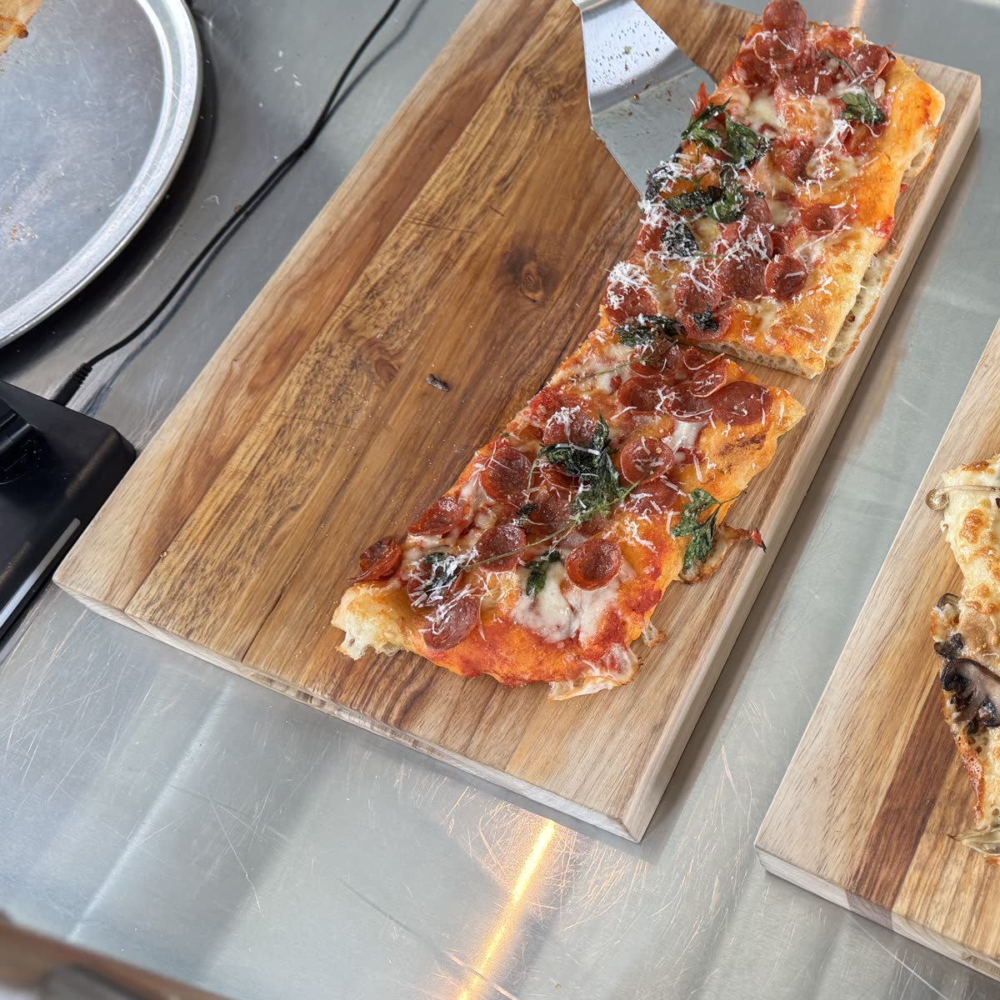
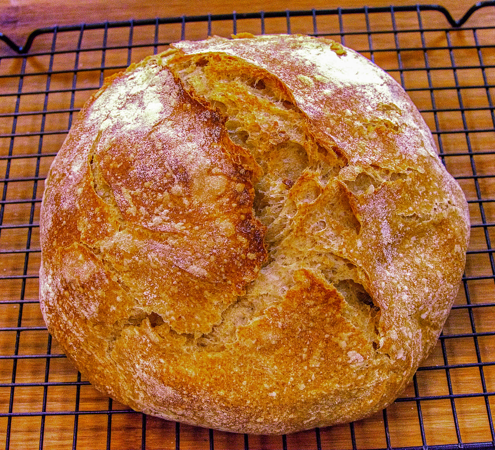

Pizza in teglia
Impasto con biga e farina del Molino Mariani, in teglia come nel 1952. La prima teglia è al banco alle 8.
A Jesi dal 1952
Impasto con biga e farina del Molino Mariani, in teglia come nel 1952. La prima teglia è al banco alle 8.
Lievito madre, bianco e integrale. Da mercoledì a sabato, dalle 9. Per evitare sprechi è gradita la prenotazione.
Calzoni al forno e fritti. Pizzette con i grasselli, impastate con lo strutto, come da tradizione Jesina.
Il mosto arriva da una cantina di Staffolo. Si fanno finché c'è, poi si aspetta la prossima vendemmia.
Impasto con biga e farina del Molino Mariani, in teglia come nel 1952. La prima teglia è al banco alle 8.
Lievito madre, bianco e integrale. Da mercoledì a sabato, dalle 9. Per evitare sprechi è gradita la prenotazione.
Calzoni al forno e fritti. Pizzette con i grasselli, impastate con lo strutto, come da tradizione Jesina.
Il mosto arriva da una cantina di Staffolo. Si fanno finché c'è, poi si aspetta la prossima vendemmia.

Dal 1952
Nel 1952 Amedeo Riccitelli, per tutti Meo, apre la pizzeria. Dal 1972, per 34 anni, la porta avanti la famiglia Pergolesi. Nel 2006 arriviamo noi, la famiglia Angelelli: per tutti era ancora "da Meo", e le abbiamo ridato il suo nome, anche per ricordare Amedeo, che oggi non c'è più.
La nostra storia
Una famiglia, un laboratorio
Roberto fa la pizza in teglia. Lorenzo fa il pane e la stirata. Le ciambelle di mosto e la pizza al formaggio le fanno insieme. Patrizia sta al banco e cura il banco e la clientela.
La teglia: impasto con biga e farina del Molino Paolo Mariani di Barbara. Il pane: solo lievito madre e farina Mariani. La prenotazione è gradita per evitare sprechi, grazie. Il pane che avanza lo portiamo alla Caritas di Jesi.
Come lavoriamoCome lavoriamo
Il pane a lievito madre si prenota per telefono, meglio con due giorni di anticipo, e si ritira al banco dal mercoledì al sabato, dalle 9. Hai un ristorante o un locale? Raccontaci cosa ti serve e vediamo insieme cosa possiamo fare.
Quando trovi cosa
Il pane si prenota per telefono, meglio due giorni prima.